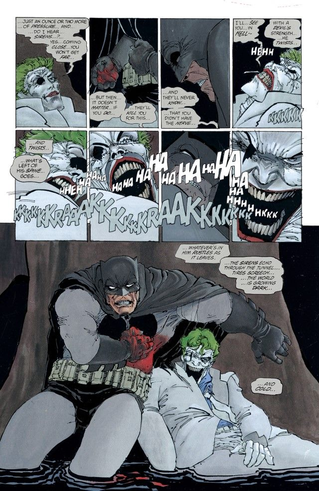
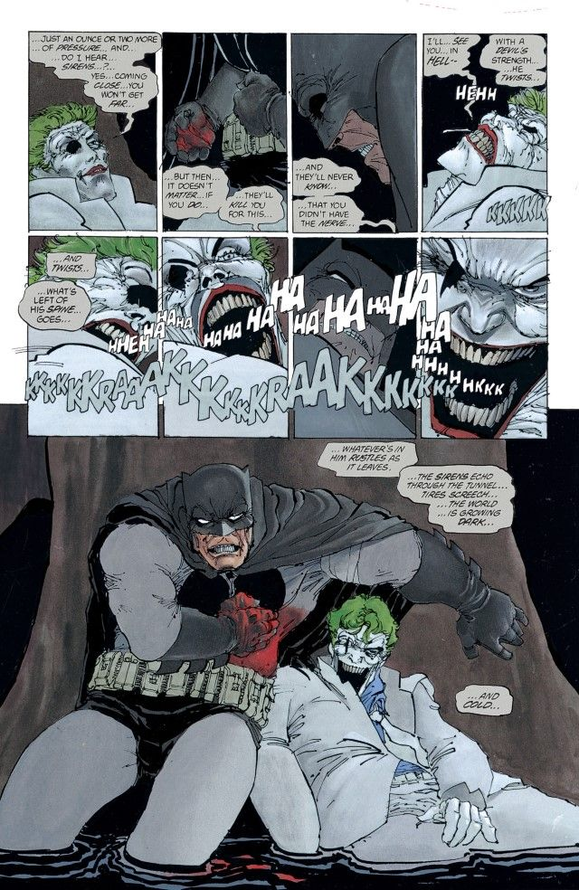
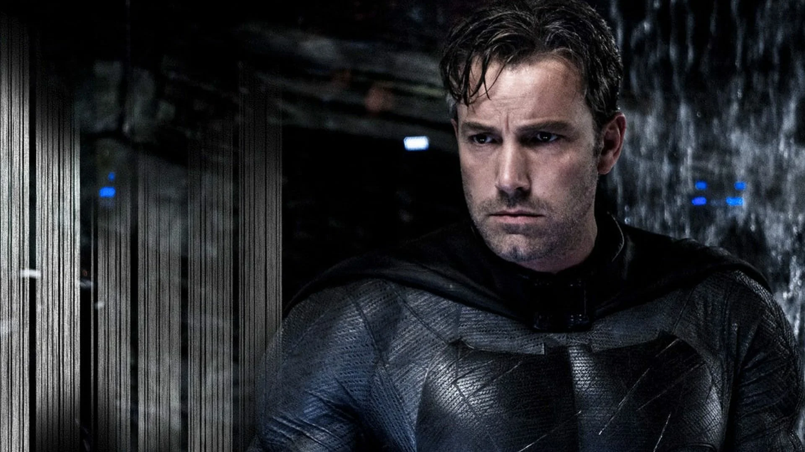

Один из самых известных вымышленных персонажей в мире, Бэтмен посвятил свою жизнь бесконечному крестовому походу, войне со всеми преступниками во имя своих убитых родителей, которых у него забрали, когда он был еще ребенком. С той трагической ночи он тренировал свое тело и разум почти до физического совершенства, чтобы стать самостоятельным супергероем. Он разработал арсенал технологий, который посрамил бы большинство армий. И он собрал команды из своих коллег-супергероев DC, таких как Лига Справедливости, Аутсайдеры и Бэтмен Инкорпорейтед.
Двойная жизнь Брюса Уэйна, миллиардера-плейбоя в дневное время, дает ему комфорт жизни без финансовых проблем, верного дворецкого, ставшего опекуном, и идеальную базу для операций в древней сети пещер под обширным поместьем его семьи. Ночью, однако, он отбрасывает всякое притворство, надевает свою культовую накидку с фестонами и остроконечный капюшон и выходит на тенистые улицы, в небо и на крыши Готэм-сити.
Он есть месть. Он и есть ночь. Он — Бэтмен.Юный Брюс Уэйн был привилегированным ребенком, выросшим под бдительным оком своих родителей, Томаса и Марты, в высших эшелонах высшего общества Готэм-сити. Вдали от медленного погружения города в коррупцию и хаос, Брюс наслаждался беззаботным детством с обещанием светлого и легкого будущего, в котором имя и состояние его семьи позаботятся о том, чтобы он никогда ни в чем не нуждался.
Но судьба вмешалась прежде, чем это будущее успело стать реальностью. Однажды ночью, после того как Уэйны вышли из кинотеатра в одном из неблагополучных районов Готэма, они были пойманы в ходе ограбления, в результате которого Томас и Марта были застрелены на глазах у Брюса. осиротев, Брюс остался на попечении дворецкого своей семьи, Альфреда Пенниуорта, поскольку он боролся за выживание в мире, где правила, как он их понимал, больше не имели смысла.
Брюс медленно превращал свое горе в топливо для пожизненной одержимости. Вместо того, чтобы поддаться самоуничтожению, он поклялся «вести войну со всеми преступниками» до конца своей жизни, чтобы трагедия, которая произошла с ним, не случилась с кем-либо еще в Готэме. Вдохновленный летучими мышами, которые кишели в собственности его семьи, и своим пожизненным страхом перед ними, он взял на себя личность Бэтмена, героя, в котором нуждается Готэм — и остальная вселенная DC. Призванный к действию светом Бэт-сигнала, прожектора, используемого его союзником комиссаром Джимом Гордоном из полицейского управления Готэм-сити, Бэтмен наблюдает за своими владениями как бдительный защитник и стойкий Темный рыцарь.

Бэтмен не обладает какими-либо метачеловеческими способностями. Вместо этого он полагается на свой острый ум и дисциплинированное тело, а также на обширную боевую и детективную подготовку. Мастер практически всех видов боевых искусств, блестящий тактик и гениальный криминалист, Брюс также имеет доступ к состоянию своей семьи, которое он использовал для создания почти безграничного запаса передовых технологий для своей войны с преступностью.
В Бэтпещере под поместьем Уэйнов находится армада специализированных Бэтмобилей и Бэтсамолетов, кладези оружия и брони, а также Бэткомпьютер, суперкомпьютер, который связывает технологии Брюса по всему миру и за его пределами.
Бэтмен гордится тем, что готов к любой чрезвычайной ситуации. Он разработал различные предохранительные меры и планы на любой потенциальный сценарий конца света. Как бывший лидер Лиги Справедливости и патриарх семьи Бэтмена, он более чем готов принять все, что вселенная бросит на него. Вооруженный поясом, полным бэтарангов, костюмом Бэтмена, оснащенным передовыми технологиями и собственными рефлексами, Бэтмен готов вселить страх в сердца преступников по всему миру.
 

БЭТМЕН: ВОЗВРАЩЕНИЕ ТЕМНОГО РЫЦАРЯ
Бэтмен против Супермена: На заре справедливости
Бэтмен против Супермена: На заре справедливости — фильм режиссёра Зака Снайдера о противостоянии Человека из стали, Супермена, и легендарного борца с преступностью, Бэтмена.
БЕН АФФЛЕК В РОЛИ БЭТМЕНА
Актерский состав
Анимационные проекты
| Год | Название | Главный актер | Режисер |
| 1989 | Бэтмен | Майкл Китон | Тим Бертон |
| 1992 | Бэтмен возвращается | Майкл Китон | Тим Бертон |
| 1995 | Бэтмен: Навсегда | Вэл Килмер | Джоэл Шумахер |
| 1997 | Бэтмен и Робин | Джордж Клуни | Джоэл Шумахер |
| 2005 | Бэтмен: Начало | Кристиан Бейл | Кристофер Нолан |
| 2008 | Темный рыцарь | Кристина Бейл | Кристофер Нолан |
| 2012 | Темный рыцарь: Возрождение легенды | Кристиан Бейл | Кристофер Нолан |
| 2016 | Бэтмен против Супермена: На заре справедливости | Бен Аффлек | Зак Снайдер |
| 2022 | Бэтмен | Роберт Паттинсон | Мэтт Ривз |